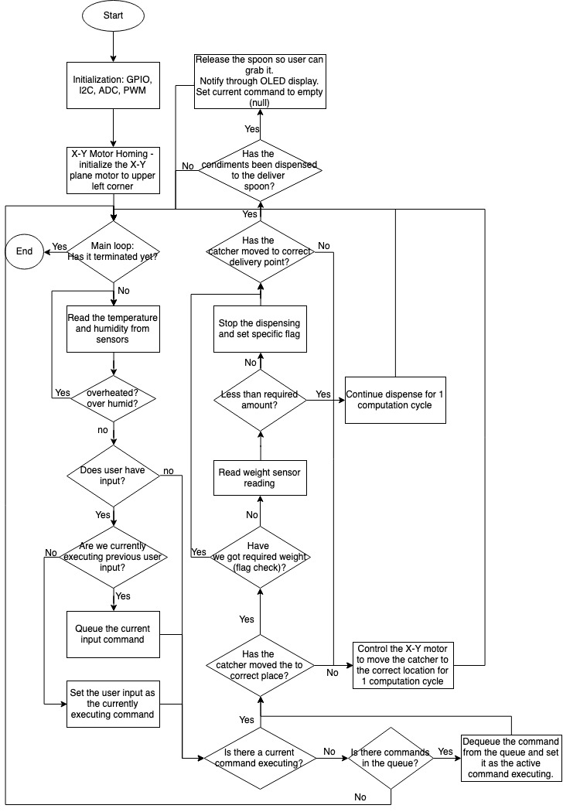
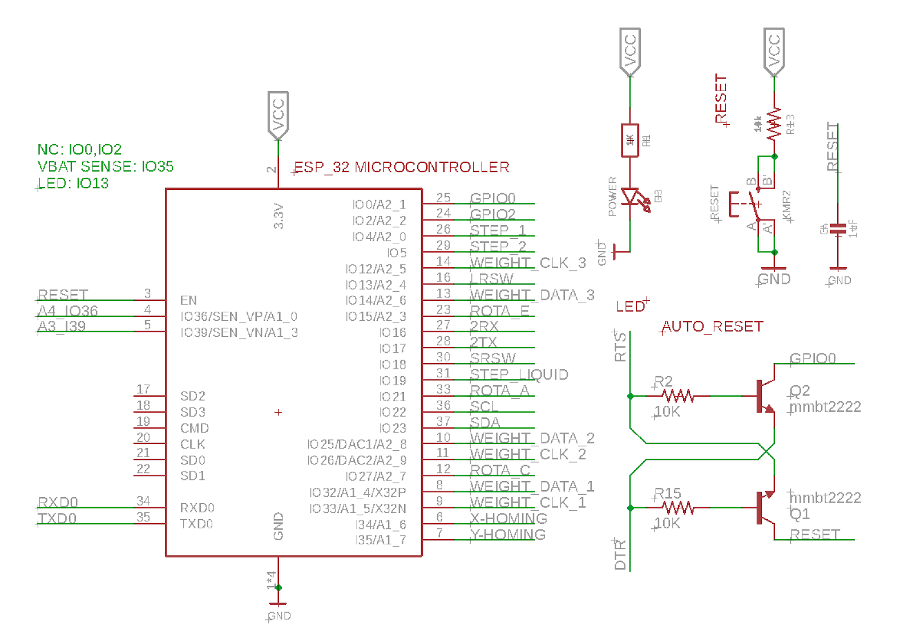
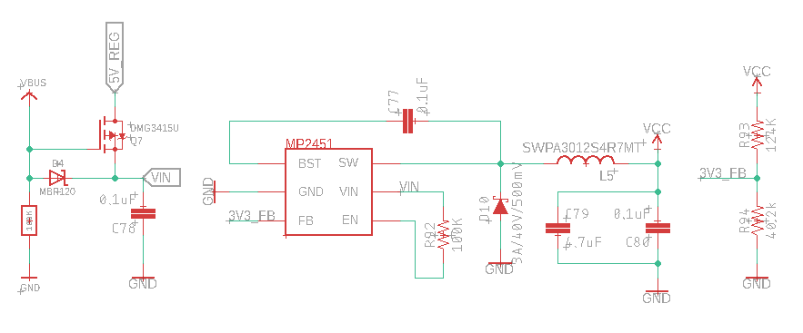
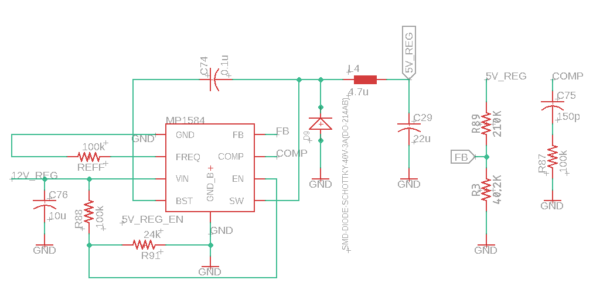
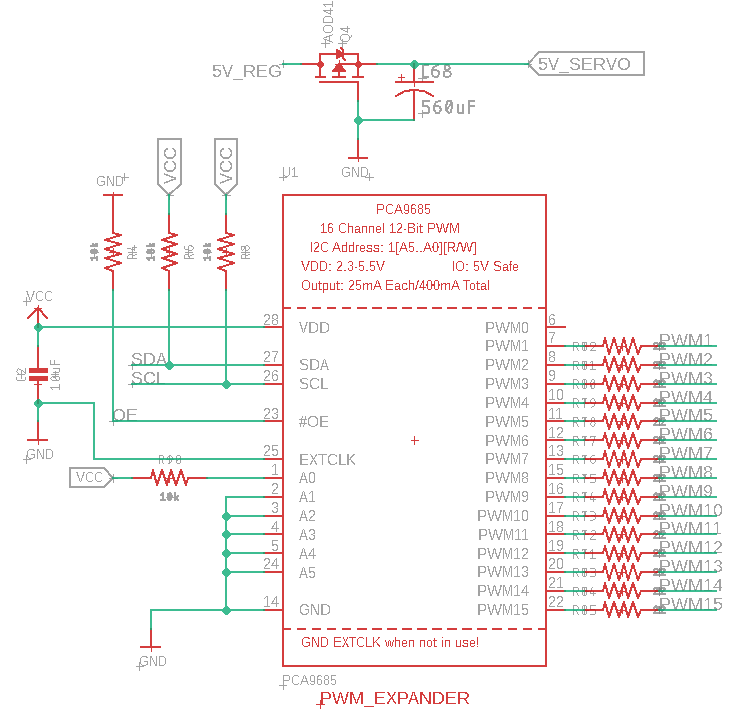
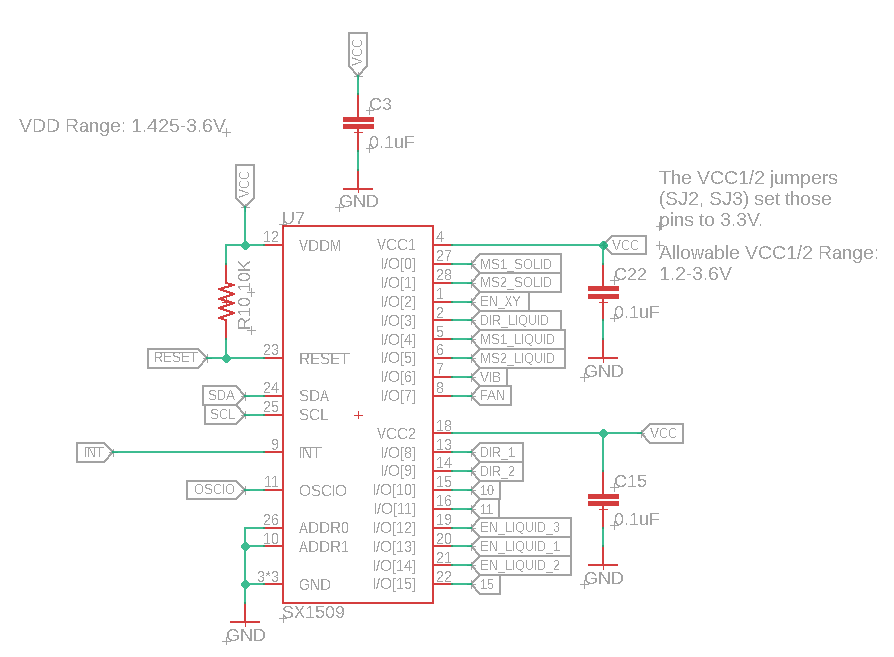
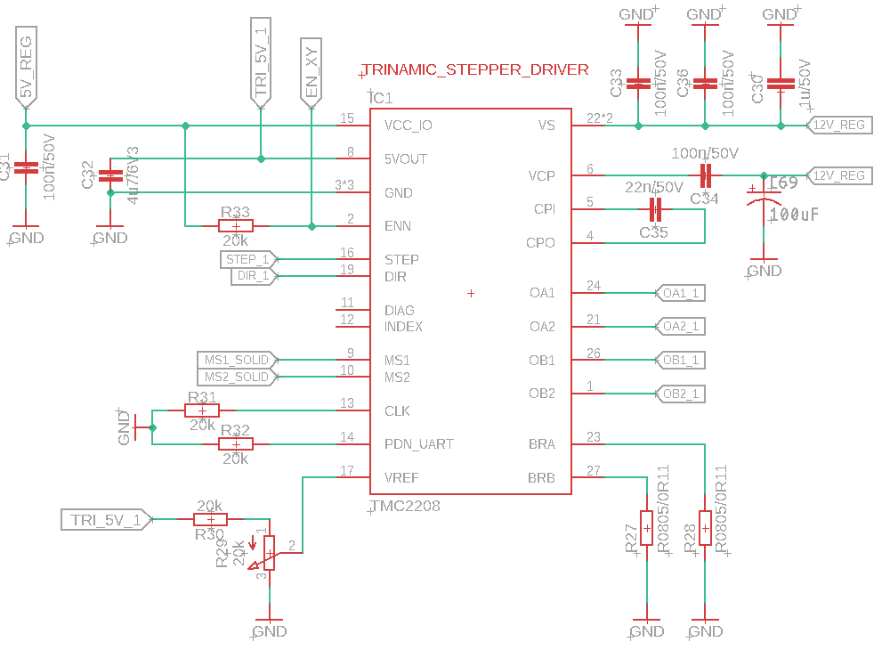
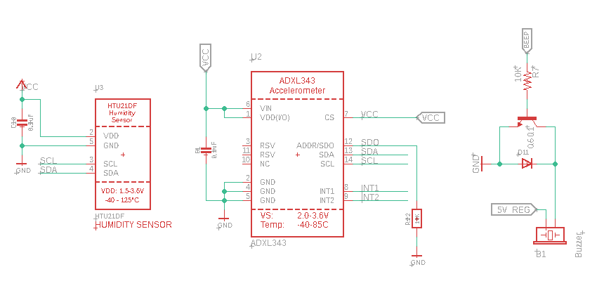
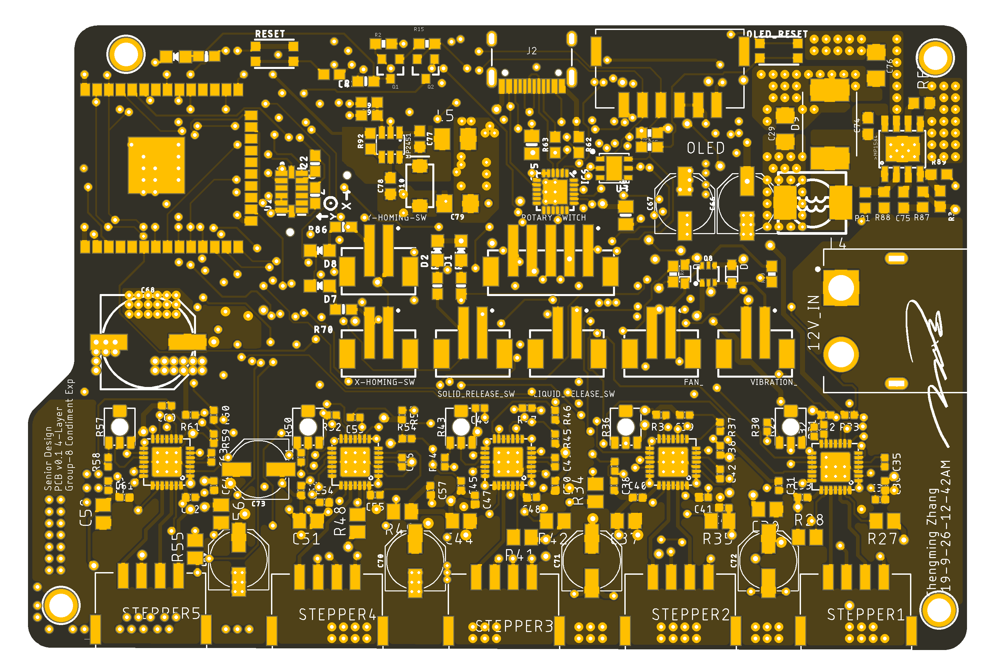
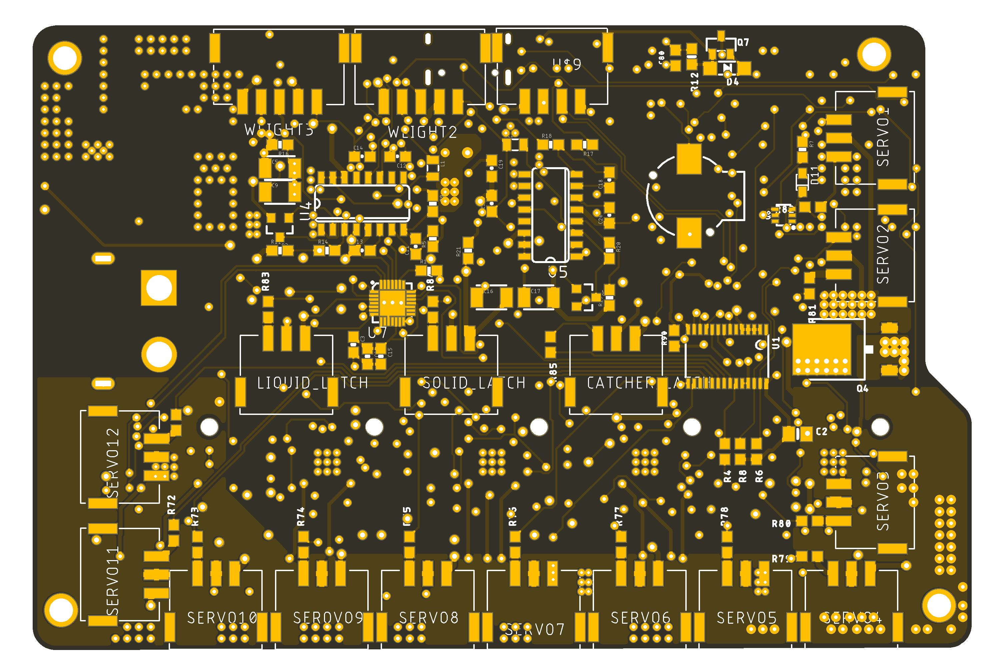

Hello,
my name is Chengming Zhang
and I am a Electrical & Computer Engineer, and Photographer from Indiana.
40.429243° N
-86.911913° W
my name is Chengming Zhang
and I am a Electrical & Computer Engineer, and Photographer from Indiana.
40.429243° N
-86.911913° W
+864 720 xxxx
Condiment Express - Senior Design Project
Project Description
Github Repo PageAs college students with little free time on our hands, cooking is a “leisure” that we don’t often have the time. As we all know, eating at restaurants or consuming fast food every day is neither practical nor healthy. What if there is a way to somehow automate this process a bit more so we can do the same cooking in less time? After a careful look at some typical western and eastern cooking processes, we find out that for those people who are new to cooking, most of the time is wasted on measuring the correct amount of ingredients and looking through the recipe book. This becomes a problem as most people are willing to save time on cooking and it has an impact on not only the new cooks but also many middle-class households. By 2020, half of the world’s population is expected to fall in the global middle class, thus at least half of the world could benefit from our design.
We are trying to create an IoT enabled condiment distribution device which is in sync with recipes that sit on the countertop. This device can distribute condiments in order with precise measurements. Users can fill in condiments in the included bottle which has a thread on the bottom and attached to the machine. The top cap is to be opened by the user to refill the condiments and the bottom thread is used by the machine for dispensing. By using our application via BlueTooth, users can communicate send information to the machine of which condiments are needed. The machine will also alert users if any condiments are running low and need a refill. To operate, it first calibrates its x-y axis and then calibrates its weight sensor. The condiment dispensing routine will happen after the calibrations are done. Since the condiments are dispensed in sequence based on the recipe, users will take the condiment directly and mix then with the rest of the food. Users need to wash the condiment collector and return it to the machine, and the machine will continue to the next sequence of the condiment dispensing.
Software Design
Given that we are designing a machine that can automatically prepare condiments for users based on requests. Multiple stages will be working collaboratively to achieve that. The computation flow is illustrated through the flowchart attached in Appendix A. Throughout the entire dispensing system, there will be several states corresponding to different stages of the dispense routine.- PREDISPENSE - the first state of the routine where the motor is moving the catcher from its starting location to the location of the condiments which requested through the X-Y system.
- DISPENSING - the vibrating motor will vibrate causing the solid condiment pass through the opening to the catcher or the peristaltic pump pumping liquid condiments from container to the catcher. The weight sensor will be monitoring the weight being dispensed for solid condiments. Once it has enough collected in the catcher, the routine will move to the next state.
- PREDELIVERY - the catcher move to the delivery point. This is similar to the PREDISPENSE state where all it is doing is moving the X-Y motor to the designated location.
- DELIVERING - the state where the condiments are dispensed once more from the catcher to the delivery spoon where user can take out of the machine and use. The catcher will have an opening controlled by the motor. It will progress to the next state once the condiments have been dispensed to the spoon.
- POSTDELIVERY - the spoon will be unlocked in this state and users are free to take the condiments they requested.
Given those states and the flow of the entire dispensing routine, expectations can be divided into the following categories:
- Being able to communicate with computers through BlueTooth that is built into the ESP32. This requires the correct setup of the I/O on the microcontroller and using USART protocol to send/receive information between two endpoints. Another part of the communication from the software perspective is being able to parse the user command, with specific format, that what is being communicated is all ASCII text.
- The main part of this project is to control the motors. Therefore, another expected functionality would be to move the motor of the X-Y system to the desired location given the chosen condiment. This involves setting up the PWM signal for the motor driver and being able to drive the stepper motor by the correct number of rotations so that the catcher end up at the desired location. The peristaltic pump will also be controlled by the PWM signal to dispense liquid condiments. Being able to dispense a predetermined amount of liquid condiments by precisely control the pump with controlling the PWM duty cycle and frequency is also one of the expected functionalities.
- The entire system also has multiple sensors that require analog-to-digital conversion: the temperature sensor, the humidity sensor, and the weight sensor. The temperature and humidity sensors will be working together to provide information regarding the environment of the condiments to users through the OLED display. The weight sensor will be working with the solid dispensing system to precisely measure the amount being dispensed. There are two software expectations: 1) being able to read in the value from the sensor using the built-in analog-to-digital converter and 2) use the reading from the weight sensor to determine whether the system should dispense more solid condiments or stop.
- An OLED will be used as a way to display information to the user, such as the step being processed out of the entire dispensing routine. The OLED will be communicated by using the SPI protocol, some expected functionalities here are to correctly setup display through SPI and being able to display the correct information rather than random pixels.

Electronic Circuit Design
Overall, the system is controlled by the Espressif System’s ESP32, a 32 bit SoC with 240 Mhz clock speed that also includes Bluetooth, wifi, and networking modules. The microcontroller software, besides its main functionality of controlling the sensor and communicating with its peripherals, also translates the input which is in (x,y) coordinate to PWM signal which is used to control the stepper motor.
The operating frequency used in our electric system is 240 MHz which is overkill for our application. However, due to the network hardware, onboard Bluetooth and WiFi, and sleeping features available in the ESP32, it is no doubt our choice for this task. As we have stated in our proposal, even though we are not going to implement any networking feature, the end goal is to design this device into an IoT.
The Auto reset circuit is borrowed from Adafruit's ESP32 Feather Board design, which trigger boot loader mode when programing via USB.

There is two level of power circuit. This one is a buck converter that convert 5v to 3.3v for the microcontroller and the other sensors. This circuit is set to output for 1A max. The MOSFET used on the left is used to switch power supply from power jack to USB. This is to prevent unevent voltage potential between two 5v power supply (usb and power jack) 
This is the second power circuit that uses a buck converter that convert 12v to 5v for the use of 5v regulator, stepper-motor, servo, and other component. This circuit is set to output for 3A max.

This is the debugger USB to Serial Converter from SLab. 
Since we have over 15 PWM signal used, we can not generate all PWM signal on the native ESP32 Clock. This 16 Channel 12-Bit PWM generator chip that use I2C. 
This SX1509 Chip is a 16 Channel GPIO expander via I2C. This is used due to the lack of I/O of the ESP32 chip. However, during our project contruction, we found out that this chip is highly unreliable, thus, in the future version, this will be replaced with something like a shift register that is eazy and reliable. 
This TMC2208 is a stepper motor driver with a lot of capabilities. We choose to use this chip to power our stepper motor mostly because of its ability to run a stepper motor much smoother and with much less noise compared to a A4988 stepper motor driver which is used widly in this application. Although TMC2208 has SPI version of the chip, we just happen to have the digital driver version in hand. 
There is two sensor used in this project. One is HTU21DF, a temperature and humidity sensor that is used in this project to prevent food from going spoiled. The other is a Accelerometer, which is to ensure the machine is only running when its installed on a leveled plane, and stationary. Any other motion will trigger the machine to stop, to prevent injury.
PCB Design
This PCB is one of my best work. Its a four layer PCB board with many I/O and mixed signals. Here are some picture of the Board File from top layer to the bottom layer. 